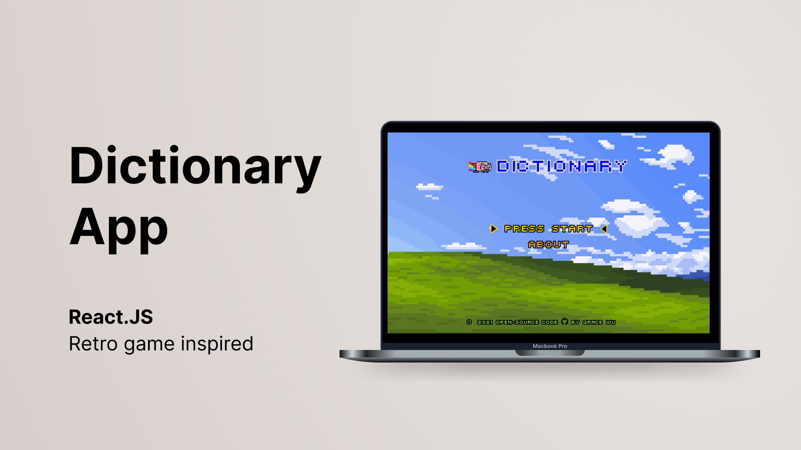

Design + Code
Weather application coded with Vanilla Javascript with
Openweathermap API integration for live weather information.
Features a day & night background which changes according to your
local time.
Design + Code
Iterated version of the previous weather app but in React.js. It
allows you to search for the weather at any location. Includes a
Celcius and Fahrenheit temperature slider. Created with
OpenWeatherMap API integration for live weather information.

Design + Code
React App that allows you to search for any word definition and
pronunciation. Includes pictures that are associated with the
searched word. Created with Dictionary API and Pexels API.
Ethnographic research + Prototype design
The project scope is based around the problem: "Why working as an
elevator technician is not considered as a career for young Swiss
women?" and what can be done to change this reality? The problem is
more than meets the eye.
Ethnographic research + Prototype design
The scope of the project is to tackle a social issue, which is the
lack of accessibility and availabe services that offer a discreet
sexual health services and information to girls and young women.
Research + Prototype design
The scope of this project, is to examine an existing product in
terms of 'Design for Sustainability' and how far have the parameters
for this design approach been considered. Followed by developing a
sustainable concept proposition with the core in mind, the
implementation of a Cradle to Cradle life cycle.
Research + Analysis
The scope of this project, is to research and identify areas of
opportunities that would enable medical packaging, namely the
blister product to achieve circularity in it's product lifecycle.
The research is based on the blister product from 2 companies
(Medipack AG and Amcor) and their supply chain, sustainability
efforts, and the criteria to attain Cradle to Cradle certification.
 based in Switzerland
with a focus on Design Management.
b
based in Switzerland
with a focus on Design Management.
b